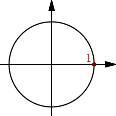
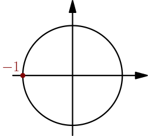

Exponent function¶
We know how $e^x$ behaves when $x$ is a real number (TODO), and next we want to define $e^z$ for a complex number $z$. We first define $e^{ix}$.
Defining $e^{i \cdot \text{real}}$¶
Let's start by figuring out which properties we want $e^{ix}$ to have, similarly to how we defined multiplication.
We need $e^{i \cdot 0} = 1$, because otherwise $e^0$ would depend on how you interpret it: on the one hand, $0$ is a real number, and from powers of real numbers we know $e^0 = 1$ (TODO), but on the other hand, $0 = i \cdot 0$ and $e^0$ is whatever $e^{ix}$ happens to be for $x=0$. This requirement alone is not enough, because there are plenty of functions that output $1$ when you plug in $x=0$.
If $a$ is a real number, we can use the chain rule to get $$ \frac{d}{dx} e^{ax} = e^{ax} \frac{d}{dx}(ax) = a e^{ax}. $$ Let's require that this also works for $a=i$. So, we want to define $e^{ix} = f(x)$, where $f$ is a complex-valued function that has these properties:
- $f(0) = 1$
- $f'(x) = i f(x)$
Let's try to find a function $f$ satisfying these conditions. Let's write $f(x) = g(x) + ih(x)$, with real-valued functions $g$ and $h$. Now we can calculate derivatives of real and imaginary parts separately to get $$ f'(x) = g'(x) + ih'(x), $$ and by expanding, we get $$ if(x)=ig(x)+i^2h(x)=ig(x)-h(x). $$ Setting these equal gives $$ g'(x) + ih'(x) = ig(x)-h(x), $$ and by comparing real and imaginary parts on both sides, we get $$ \left\{\begin{aligned} h'(x) &= g(x) \\ g'(x) &= -h(x). \end{aligned}\right. $$ So, when calculating the derivative of one of $g$ and $h$, you get the other function, possibly with a minus sign in front. This is exactly how derivatives of $\sin$ and $\cos$ behave, so one possibility is $$ h(x) = \sin(x), \quad g(x) = \cos(x) $$ and so $$ e^{ix} = f(x) = \cos(x) + i\sin(x). $$ This also satisfies $f(0)=1$: because $1$ is on the origin-centered unit circle at angle $0$, we have $1 = \cos(0) + i\sin(0)$.

For example, by plugging in $x=\pi$, we get $$ e^{i\pi} = \cos(\pi) + i\sin(\pi) = -1, $$ because $\pi$ radians means half of the full turn $2\pi$, and so $\cos(\pi) + i\sin(\pi)$ is at left on the unit circle.

See this 3blue1brown video for a more visual way to understand why $\cos(x)+i\sin(x)$ satisfies our conditions.
The equation $e^{ix} = \cos(x) + i\sin(x)$ and its special case $e^{i\pi}=-1$ feel weird, and we don't actually know whether that's true yet; maybe there are multiple different solutions to our equations $f'(x)=if(x)$ and $f(0)=1$. We found one solution by guessing, and next we check if there are other solutions.
Let $f$ be any complex-valued function satisfying $f'(x)=if(x)$ and $f(0)=1$. We compare it to the function we already found by dividing; that is, we look at $$ \frac{f(x)}{\cos(x)+i\sin(x)}. $$ By multiplying with conjugate of bottom, we get $$ \begin{align} \frac{f(x)}{\cos(x)+i\sin(x)} &= \frac{f(x)(\cos(x)-i\sin(x))}{(\cos(x)+i\sin(x))(\cos(x)-i\sin(x))} \\ &= \frac{f(x)(\cos(x)-i\sin(x))}{\cos^2(x) - i^2\sin^2(x)} \\ &= f(x)(\cos(x)-i\sin(x)), \end{align} $$ where the bottom became $\cos^2(x)+\sin^2(x)=1$. Another way to see why this happens is to consider what multiplying $\cos(x)+i\sin(x)$ with its conjugate does; that gives $\abs{\cos(x)+i\sin(x)}^2$, where the length is $\abs{\cos(x)+i\sin(x)}=1$ because $\cos(x)+i\sin(x)$ is on the origin-centered unit circle.
Now we can use the product rule and $f'(x)=if(x)$ to get $$ \begin{align} \frac{d}{dx}\left( \frac{f(x)}{\cos(x)+i\sin(x)} \right) &= \frac{d}{dx}\Bigl( f(x)(\cos(x)-i\sin(x)) \Bigr) \\ &= f'(x)(\cos(x)-i\sin(x)) + f(x)\frac{d}{dx}\left( \cos(x)-i\sin(x) \right) \\ &= if(x)(\cos(x)-i\sin(x)) + f(x)(-\sin(x)-i\cos(x)) \\ &= f(x)(i\cos(x)-i^2\sin(x)) - f(x)(\sin(x)+i\cos(x)) \\ &= f(x)(i\cos(x)+\sin(x)) - f(x)(i\cos(x)+\sin(x)) \\ &= 0. \end{align} $$ Because the derivative is zero, $\frac{f(x)}{\cos(x)+i\sin(x)}$ must be a constant. To find the value of that constant, we can plug in $x=0$, and we get $$ \begin{align} \frac{f(x)}{\cos(x)+i\sin(x)} &= \text{constant} \\ &= \frac{f(0)}{\cos(0)+i\sin(0)} \\ &= \frac{1}{1} = 1. \end{align} $$ Now we can multiply both sides by $\cos(x)+i\sin(x)$ and we get $$ f(x)=\cos(x)+i\sin(x). $$ So, any solution to our conditions $f'(x)=if(x)$ and $f(0)=1$ is actually just $\cos(x)+i\sin(x)$. This means that $\cos(x)+i\sin(x)$ is the only solution, and if we want $e^{i \cdot 0} = 1$ and $\frac{d}{dx} e^{ix} = ie^{ix}$, we must do this:
We define $$ e^{ix} = \cos(x)+i\sin(x) $$ for all real numbers $x$. In particular, we have $e^{i\pi}=-1$.
These results are known as Euler's formula and Euler's identity.
Defining $e^{\text{complex}}$¶
With real numbers $a$ and $b$, we have $$ \frac{d}{dx} e^{a+bx} = be^{a+bx}, $$ because the derivative of $a+bx$ is $b$, and we can use the chain rule just like in the beginning of this page. Again, we want this to also work for $b=i$, so $$ \frac{d}{dx} e^{a+ix} = ie^{a+ix}. $$ So, we want the function $f(x)=e^{a+ix}$ to satisfy $f'(x)=if(x)$. For plugging in $x=0$, we want to get $$ f(0)=e^a, $$ so this is just like what we had previously, but with $f(0)=e^a$ instead of $f(0)=1$. Again, we solve this by guessing a solution and then showing that no other solutions exist.
With real numbers, we have $e^{x+y}=e^xe^y$, and so we can expect to have $$ e^{a+ix}=e^ae^{ix}, $$ where $e^{ix}$ is what we just defined and can be calculated with Euler's formula. This indeed satisfies the conditions:
- Plugging in $x=0$ to $e^a e^{ix}$ gives $e^a$.
- By moving the constant $e^a$ in front of the derivative, we get $$ \frac{d}{dx}(e^ae^{ix}) = e^a\frac{d}{dx}e^{ix} = e^aie^{ix}=i(e^ae^{ix}). $$
Let $f$ be any complex-valued function satisfying $f(0)=e^a$ and $f'(x)=if(x)$. Because $f'(x) = if(x)$, based on what we calculated above, we have $$ \frac{d}{dx}\frac{f(x)}{e^{ix}} = 0, $$ and so $\frac{f(x)}{e^{ix}}$ must be a constant. To determine the value of the constant, we can again plug in $x=0$, and we get $$ \frac{f(x)}{e^{ix}} = \frac{f(0)}{e^{0}} = f(0) = e^a, $$ and so $$ f(x) = e^ae^{ix}, $$ and that's the only solution to our equations $f'(x)=if(x)$ and $f(0)=e^a$.
We define $$ e^{a+bi}=e^ae^{bi}, $$ where $e^{bi}=\cos(b)+i\sin(b)$ and $e^a$ is the exponent function for real numbers.
Note that by plugging in $a=0$ or $b=0$, we get $$ e^{0+bi}=e^0e^{bi} = 1e^{bi} = e^{bi} $$ and $$ e^{a+0i}=e^a\underbrace{(\cos(0)+i\sin(0))}_1=e^a $$ as expected. Also note that $e^z$ can't be zero, no matter which complex number $z$ is, because neither of $e^a$ and $e^{bi}$ is zero; $e^a$ is always positive and $e^{bi}$ is on the origin-centered unit circle.
Rules¶
Because multiplication adds angles and multiplies lengths, multiplying two complex numbers with length 1 and angles $\alpha$ and $\beta$ gives another complex number with length 1 and angle $\alpha+\beta$. Because the complex number with length 1 and angle $\theta$ is $$ \cos(\theta) + i\sin(\theta) = e^{i\theta}, $$ we can write this as $$ e^{i(\alpha+\beta)} = e^{i\alpha}e^{i\theta}. $$ So, if $z=i\alpha$ and $w=i\beta$, with real numbers $\alpha$ and $\beta$, we have $e^{z+w}=e^ze^w$. This is also known to work when $z$ and $w$ are real numbers.
Now, let $z=a+bi$ and $w=x+yi$ be any complex numbers. We get $$ e^{z+w}=e^{a+x+(b+y)i}=e^{a+x}e^{(b+y)i} = e^ae^xe^{bi}e^{yi}, $$ where the equality in the middle comes from the definition of $e^{a+bi}$, with $a+x$ instead of $a$ and $b+y$ instead of $b$, and the last equality comes from applying $e^{z+w}=e^ze^w$ in the two cases where we already know it works. On the other hand, we have $$ e^ze^w=e^{a+bi}e^{x+yi}=e^ae^{bi}e^xe^{yi} = e^ae^xe^{bi}e^{yi}, $$ which is same as what we got from $e^{z+w}$.
For all complex numbers $z$ and $w$, we have $$ e^{z+w}=e^ze^w. $$
Other well-known rules for the exponent function follow from this rule. Examples:
- Because $e^{z-w}e^w = e^{z-w+w}=e^z$, we have $e^{z-w}=e^z/e^w$.
- Because $e^{-w}e^w=e^{-w+w}=e^0=1$, we have $e^{-w}=1/e^w$.
- For a positive integer $n$, we get $$ \begin{align} \underbrace{e^z e^z e^z e^z \dots e^z}_{\text{$n$ times}} &= e^{z+z}\underbrace{e^z e^z \dots e^z}_{\text{$n-2$ times}} \\ &= e^{z+z+z}\underbrace{e^z \dots e^z}_{\text{$n-3$ times}} \\ &= e^{z+z+z+\dots+z}, \end{align} $$ where we used $e^ze^w=e^{z+w}$ several times, depending on what number $n$ is. So, $n$ copies of $e^z$ multiplied is same as $e^{z+z+\dots+z}$, with $n$ copies of $z$ added. We write this as $(e^z)^n = e^{nz}$.
- If $n=-\abs{n}$ is a negative integer, then from the above results, we get $$ (e^z)^n = \frac{1}{(e^z)^{\abs{n}}} = \frac{1}{e^{\abs{n}z}} = e^{-\abs{n}z}=e^{nz}. $$ If $n=0$, then $(e^z)^n$ and $e^{nz}$ are both $1$, and $(e^z)^n=e^{nz}$ works in that case too.